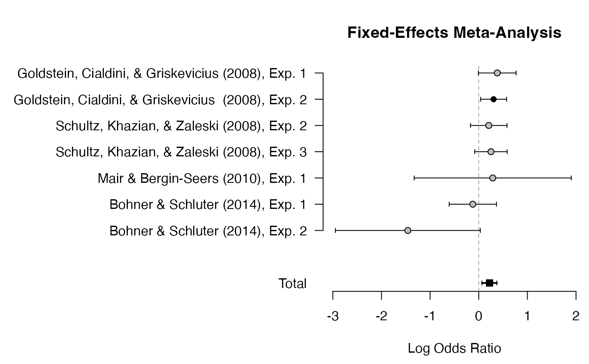

Plots estimated effect sizes for all studies.
fitted meta-analysis model
lower limit of the x-axis
upper limit of the x-axis
which meta-analysis model should be used to show (shrinked)
estimates of the study effect sizes. The name must match the corresponding
name in the list meta. Can be suppressed by shrinked = ""
character vector with two values: first, either "mean"
or "50%"; and second, either highest-probability-density interval "hpd"
or the Bayesian credibility interval "bci".
margin of the plot in the order c(bottom, left, top, right)
(see par)
size of the y-axis annotation for the labels of studies.
arguments passed to plot (e.g., from, to)
data(towels)
mf <- meta_fixed(logOR, SE, study, towels)
plot_forest(mf, mar = c(4.5, 20, 4, .2), xlab = "Log Odds Ratio")
